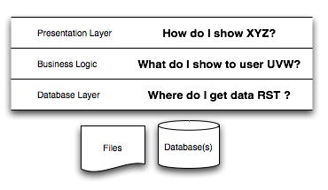
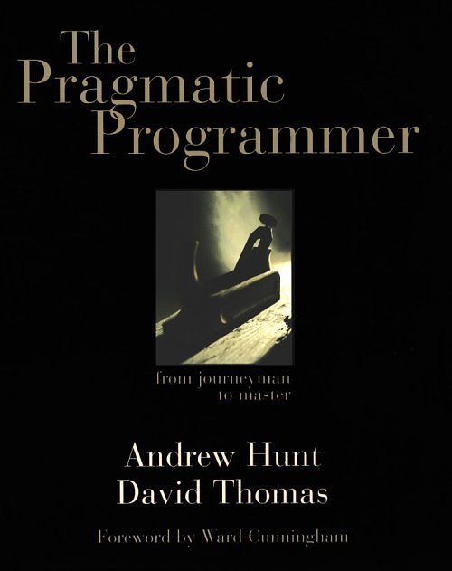

<!DOCTYPE html><html lang="bg"></html><head><meta charset="utf-8" /><!--[if lt IE 9]><script src="js/html5shim.js"></script><![endif]--><link href="css/styles.css" rel="stylesheet" /><link href="css/pygments.css" rel="stylesheet" /><title>WEBLOZ '13</title></head><body><header><h1>WEBLOZ '13</h1><nav><ul><li><button id="prev-btn" title="Previous slide">Previous Slide</button></li><li><span id="slide-number"></span> / <span id="slide-total"></span></li><li><button id="next-btn" title="Next Slide">Next Slide</button></li></ul></nav></header><div id="deck"><section><hgroup><h1>WEBLOZ '13</h1><h2>20 април 2013</h2></hgroup></section><section>
<hgroup><h1>Application Structure</h1></hgroup>
<ul><li class="action">Code duplication and lack of reuse
</li><li class="action">Poor organization
</li><li class="action">No clear separation of functionality and purpose
</li><li class="action">No consistent coding style throughout the project</li></ul></section>
<section>
<hgroup><h1>Separation of Concerns</h1></hgroup>
<p>In computer science, separation of concerns (SoC) is a design principle that comprises the process of separating a computer program into distinct features that overlap in functionality as little as possible.</p></section>
<section>
<hgroup><h1>Separation of Concerns</h1></hgroup>
</section>
<section>
<hgroup><h1>Spaghetti code</h1><h2>Problem 1</h2></hgroup>
<p>Ravioli code, Lasagna code, Spaghetti with meatballs</p></section>
<section>
<hgroup><h1>Identation</h1><h2>Problem 2</h2></hgroup>
<p>Consistent</p></section>
<section>
<hgroup><h1>HTML in Controllers</h1><h2>Problem 3</h2></hgroup>
<div class="highlight"><pre><span class="cp">&lt;?php</span> 
<span class="c1">//....</span>
<span class="k">if</span><span class="p">(</span><span class="nv">$this</span><span class="o">-&gt;</span><span class="na">user</span><span class="o">-&gt;</span><span class="na">editProfilePhoto</span><span class="p">(</span><span class="nv">$newname</span><span class="p">)){</span>
    <span class="k">echo</span> <span class="s1">&#39;&lt;div id=&quot;status&quot;&gt;success&lt;/div&gt;&#39;</span><span class="p">;</span>
    <span class="k">echo</span> <span class="s1">&#39;&lt;div id=&quot;message&quot;&gt;&lt;script&gt;setElement(1,&quot;&#39;</span><span class="o">.</span><span class="nv">$newdir</span><span class="o">.</span><span class="s1">&#39;&quot;)&lt;/script&gt;&lt;/div&gt;&#39;</span><span class="p">;</span>
    <span class="k">echo</span> <span class="s1">&#39;&lt;div id=&quot;uploadedfile&quot;&gt;&lt;/div&gt;&#39;</span><span class="p">;</span>
<span class="p">}</span> <span class="k">else</span>
<span class="p">{</span>
    <span class="k">echo</span> <span class="s1">&#39;&lt;div id=&quot;status&quot;&gt;failed&lt;/div&gt;&#39;</span><span class="p">;</span>
    <span class="k">echo</span> <span class="s1">&#39;&lt;div id=&quot;message&quot;&gt;ERORR#&lt;/div&gt;&#39;</span><span class="p">;</span>
<span class="p">}</span>
</pre>
</div>
</section>
<section>
<hgroup><h1>OOP Principles</h1><h2>Problem 4</h2></hgroup>
<p>SOLID</p><ul><li class="action">Single responsibility principle - a class should have only a single responsibility.
</li><li class="action">Open/closed principle - “software entities … should be open for extension, but closed for modification”.
</li><li class="action">Liskov substitution principle - “objects in a program should be replaceable with instances of their subtypes without altering the correctness of that program”. See also design by contract.
</li><li class="action">Interface segregation principle - “many client-specific interfaces are better than one general-purpose interface.”
</li><li class="action">Dependency inversion principle</li></ul></section>
<section>
<hgroup><h1>Comments</h1><h2>Problem 5</h2></hgroup>
<p>Bad example:</p><div class="highlight"><pre><span class="cp">&lt;?php</span>
  <span class="sd">/**</span>
<span class="sd">   * Файл: account.php</span>
<span class="sd">   * Тип: Controller</span>
<span class="sd">   * Клас: Account</span>
<span class="sd">   * </span>
<span class="sd">   * Съдържание: create(), login(), logout()</span>
<span class="sd">   * </span>
<span class="sd">   * Описание: Създаване на профил, функции за вход и изход</span>
<span class="sd">   */</span>
</pre>
</div>
</section>
<section>
<hgroup><h1>Comments</h1><h2>Problem 5</h2></hgroup>
<p>Good example:</p><div class="highlight"><pre><span class="cp">&lt;?php</span>
  <span class="o">...</span>
  <span class="sd">/**</span>
<span class="sd">  * Creates unique slug for a post.</span>
<span class="sd">  * @uses Bundle - Sluggable</span>
<span class="sd">  */</span>
  <span class="o">...</span>
  <span class="sd">/**</span>
<span class="sd">  * Get all posts by a user for all blogs.</span>
<span class="sd">  * @return paginated posts.</span>
<span class="sd">  */</span>
  <span class="o">...</span>
</pre>
</div>
</section>
<section>
<hgroup><h1>JavaScript</h1></hgroup>
<p>Backbone.js, Angular.js, Knockout.js</p></section>
<section>
<hgroup><h1>The Pragmatic Programmer</h1></hgroup>
</section>
<section>
<hgroup><h1>The Broken Window Theory</h1></hgroup>
</section>
<section>
<hgroup><h1>Mastering the Craft</h1></hgroup>
<p>Mastering the Craft, a lecture by Stefan Kanev - <a hef="http://youtu.be/7n3eqmc7VxY">http://youtu.be/7n3eqmc7VxY</a></p></section>
<section>
<hgroup><h1>Presentation</h1><h2>Problem 6</h2></hgroup>
<ul><li class="action">Very long presentation.
</li><li class="action">Not showing the value and the best parts of the project.
</li><li class="action">Not showing the project to the public, but presenting it to us.
</li><li class="action">Reading from a paper.
</li><li class="action">Practice!!!</li></ul></section>
<section>
<hgroup><h1>Idea</h1><h2>Problem 7</h2></hgroup>
<p>Creating a project for the project.</p></section>
<section>
<hgroup><h1>Integration</h1></hgroup>
<p>Think about integration with other systems.</p></section>
<section>
<hgroup><h1>Questions</h1></hgroup>
<p>???</p></section>
</div><script src="js/jquery-1.5.2.min.js"></script><script src="js/jquery.jswipe-0.1.2.js"></script><script src="js/htmlSlides.js"></script><script src="js/pusher.js"></script><script type="text/javascript">$(function() {
  htmlSlides.init({ hideToolbar: true });
});

var pusher = new Pusher('a2024b659f492cab86cc');
pusher.subscribe('lectures');
pusher.bind('refresh', function(data) {
  location.reload(true);
});</script></body>